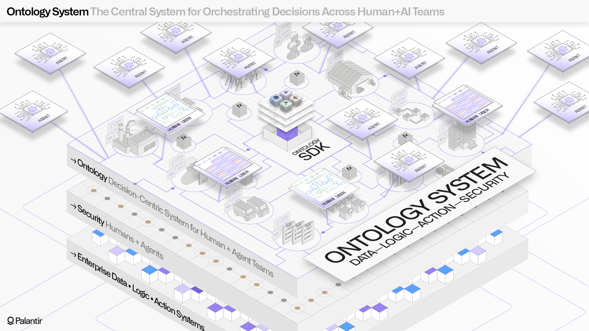

The Palantir Ontology is an operational layer for the organization. The Ontology sits on top of the digital assets integrated into the Palantir platform (datasets, virtual tables, and models) and connects them to their real-world counterparts, ranging from physical assets like plants, equipment, and products to concepts like customer orders or financial transactions. In many settings, the Ontology serves as a digital twin of the organization, containing both the semantic elements (objects, properties, links) and kinetic elements (actions, functions, dynamic security) needed to enable use cases of all types.
Defining the semantics of your organization happens by mapping existing datasources into objects, properties, and links in the Ontology. Far beyond data cataloging or schema design solutions, the Ontology allows you to define a robust foundation for end-user workflows, including rich metadata for all fields and complete with granular security and governance for all changes.
Learn about creating the semantic elements of the Ontology: object types and link types.
The kinetics of the organizationâenabling change while complying with organizational controls and governanceâare defined in the Ontology using action types and functions. Action types enable you to capture data from operators in your organization or orchestrate decision-making processes that connect to your existing systems, while functions provide a way to author and evolve business logic with arbitrary complexity.
Learn about creating the kinetic elements of the Ontology: action types and functions.
An interface is an Ontology type that describes the shape of an object type and its capabilities. Interfaces provide object type polymorphism, allowing for consistent modeling of and interaction with object types that share a common shape.
Learn more about interfaces.
The goal of investing in the Ontology is to facilitate better decision-making in an organization at scale. To achieve this, the Ontology is deeply integrated into Palantir's user-facing analytical and operational tools: users can create reusable Object Views, search for objects of interest in Object Explorer, perform complex analyses in Quiver, build high-quality applications in Workshop, and more.
Learn more about how to leverage the Ontology in user-facing applications.
:::callout{theme="success" title="Palantir Learning portal"} Now that you know the theory, get started on building your first Ontology with our course on learn.palantir.com â. :::